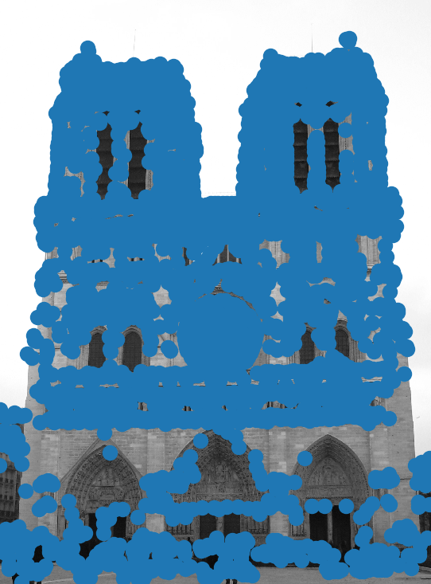
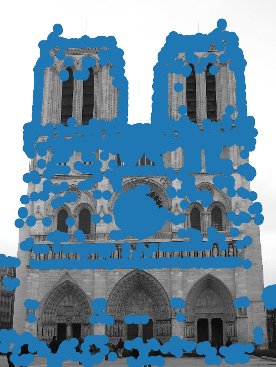
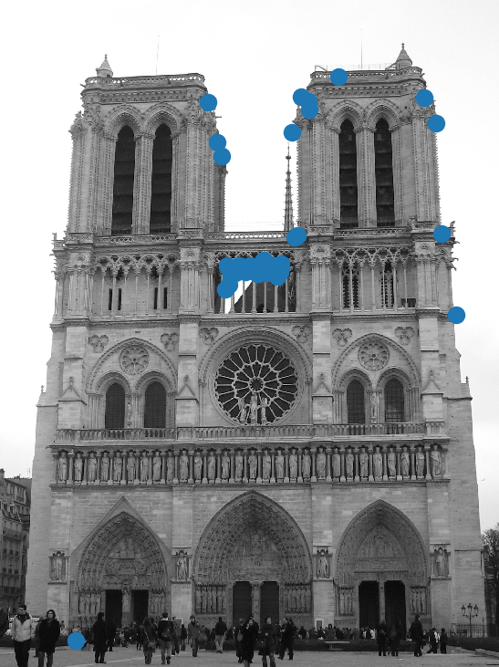
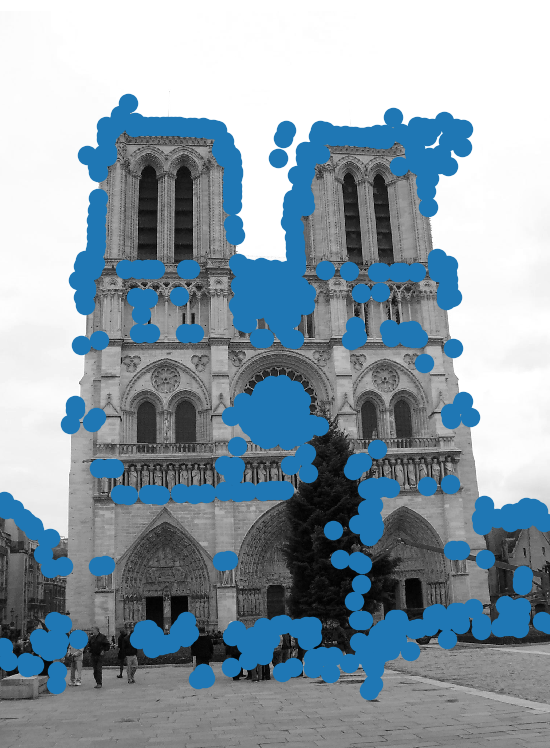
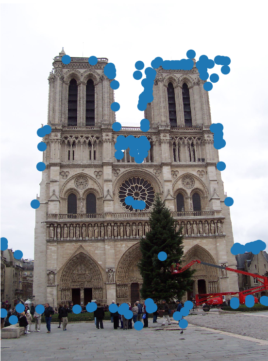
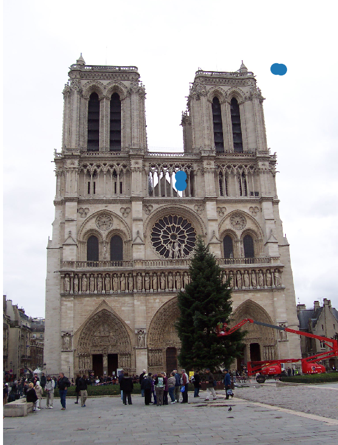

Image Feature
The program I did works in a special way that allowed me to better use my knowlege of what I have learned in class. In order to arrive to a final result, I devided my work into the following steps:
The first part, which I found to be the most challenging part, consisted in finding the main features of a picture in order to be able to compare them later. I did this with the following code:
features.py This code is run by typing $ python features.py in a terminal.
def gaussianKernel(size):
x, y = mgrid[-size:size+1, -size:size+1]
g = exp(-(x**2/float(size)+y**2/float(size)))
return g / g.sum()
def imageCorners(image):
size = 3
y, x = mgrid[-size:size+1, -size:size+1]
# We create a gaussianX and a gaussianY
gaussianX = - x * exp(-(x**2/float((0.5*size)**2)+y**2/float((0.5*size)**2)))
gaussianY = - y * exp(-(x**2/float((0.5*size)**2)+y**2/float((0.5*size)**2)))
imageX = signal.convolve(im, gaussianX, mode='same')
imageY = signal.convolve(im, gaussianY, mode='same')
# Gaussian filter to blur the image
gaussian = gaussianKernel(3)
# We combine the possible outcomes
finalXX = signal.convolve(imageX*imageX, gaussian, mode='same')
finalXY = signal.convolve(imageX*imageY, gaussian, mode='same')
finalYY = signal.convolve(imageY*imageY, gaussian, mode='same')
aux = finalXX * finalYY - finalXY**2
return aux / (finalXX + finalYY)
def getPoints(im):
# We find the coordanates for the top corner above 0.1 (Threshold)
# Modify the Threshold to find more/less features
corner = (im > max(im.ravel()) * 0.3).nonzero()
arrayCoordinates = [(corner[0][k], corner[1][k]) for k in range(len(corner[0]))]
# We fill an array with all the values we found
val = argsort([im[j[0]][j[1]] for j in arrayCoordinates])
# We create an array to store all, this also contains the min number of pixels
# between points (I decided 10 pixels)
pointsArray = zeros(im.shape)
pointsArray[10:-10, 10:-10] = 1
final = []
for i in val:
if pointsArray[arrayCoordinates[i][0]][arrayCoordinates[i][1]] == 1:
final.append(arrayCoordinates[i]) # if == 1, append
pointsArray[(arrayCoordinates[i][0]-10):(arrayCoordinates[i][0]+10),
(arrayCoordinates[i][1]-10):(arrayCoordinates[i][1]+10)] = 0
return final
As you can see, I did not use a native gaussian filter applier given that I don't know why I got very weird results. This is why I decided to instead apply a kernel the way I did and base my results on X*X, X*Y and Y*Y combinations. For the purpose of showing my work, this is what happened when I ran my code with a simple Gaussian Convolution instead of the final solution I proposed
I did the following part by modifying a bit what we saw in class. I had issues figuring out why the other ways of doing this didn't work I was not understading a lot. I figured I could use what I have leared to try to solve this better. First I created a corner function but modified the Threshold in order to ignore points that are not really useful. Here are some images from the results I got, with diferent Thresholds:
|    |
Here are the results with the other picture of Notre Dame:
|    |
I don't know why the results are a bit different but I decided to use the First image with a 0.3 Threshold and the second image with a 0.1 Threshold, this images:
After much trial and error I was not able to match the two features together. I realized that I might have something to do with the way I located all the features but I simply found the way discribed in the Word document to be confusing and I didn' really understand how to aproach it. I decided that using my skills learned in class to do the getFeatures and getInterestPoints in a function and to have some results would be better than writing some code that is not able to work and show me a basic result.